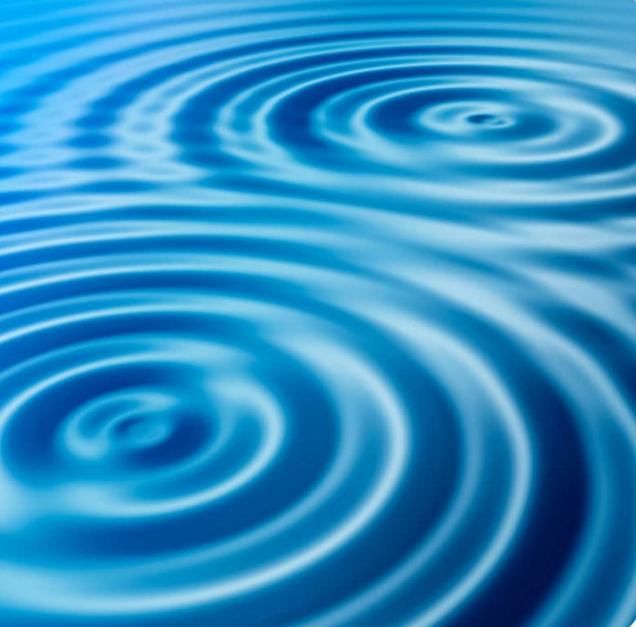
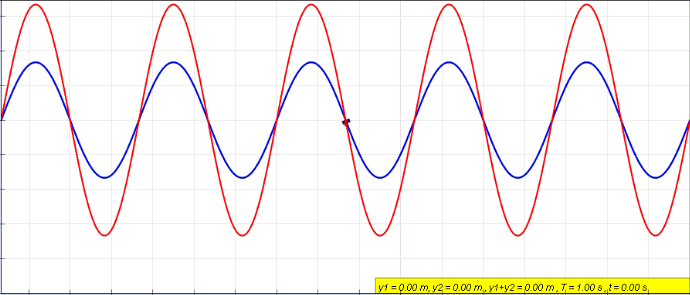
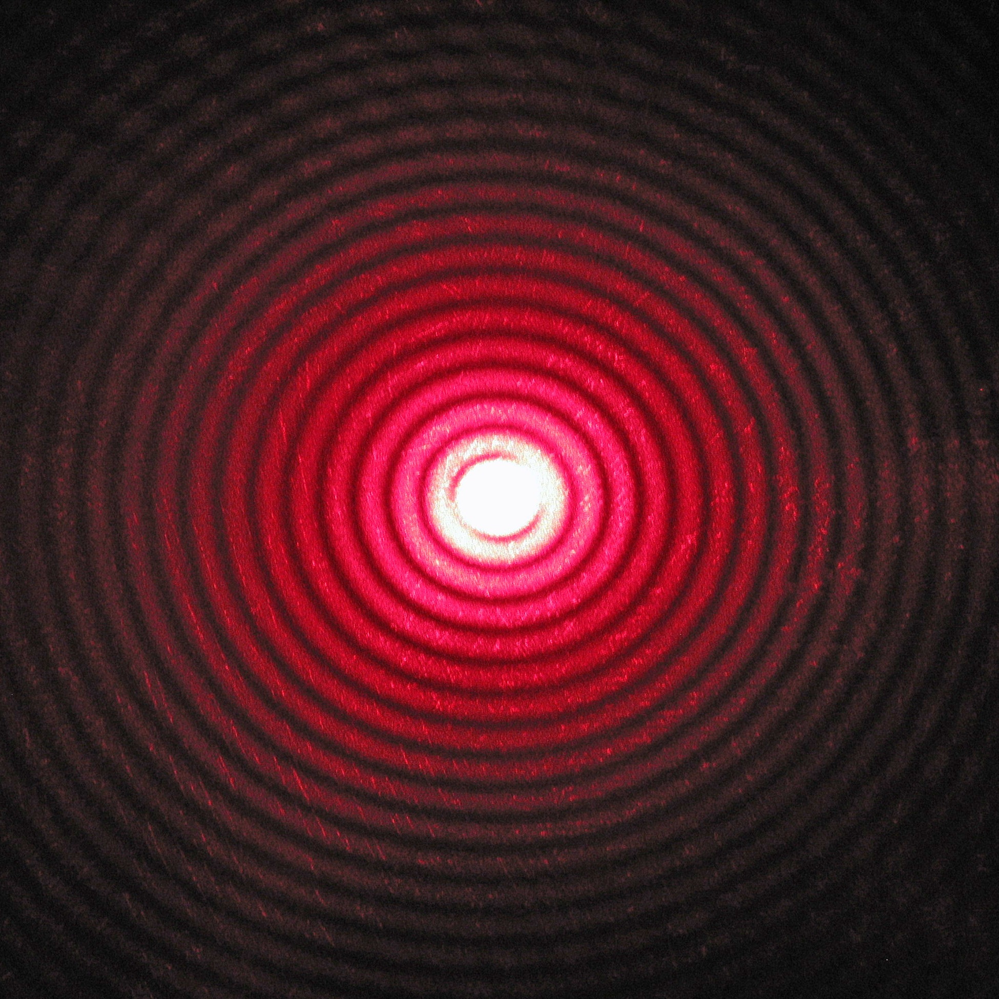
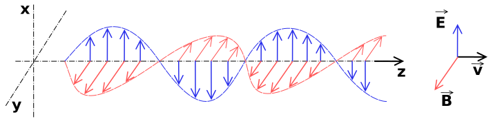
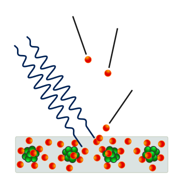

Waves
At first glance there appears to be no connection between light and waves. The waves of the ocean look and behave very different from light. In order to see the similarities, one must look at the properties that all waves have in common.
Interference
Interference is the property that distinguishes waves from particles. If two distinct waves meet, the waves pass through each other without being disturbed. During the meeting distinct patterns emerge called interference pattersn.
The above image shows a red and a blue wave that meet. The resulting wave is shown in red. The resulting wave appears to appear and disappear without moving in any direction. This is called a standing wave. If you look closely, then you will recognize that at certain points the resulting red wave does not change with time; it has neither crest nor trough at these points.
If the two wave crests meet each other, then the resultant wave crest will be greater than the individual displacement of each crest. This type of interference is known as Constructive interference. If a wave crest meets a wave trough the resulting wave disappears. This type is called destructive interference.
Diffraction
The above image displays a diffraction pattern of a red laser beam projected onto a plate after passing through a small circular aperture in another plate. These diffraction patterns result from interference.Wherever the pattern is dark, destructive interference has cancelled the wave; wherever the pattern is very bright, this is the result of constructive interference.
The color of light is indicative of its wavelength. The brightness of light or its intensity is proportional to the square of the size of its crest and trough; the square of the amplitude is proportional to the intensity. Finally, we need to understand what is actually oscillating in a light wave.
Electro-Magnetic Wave
Unlike the surface wave on a lake light is not a disturbance in a medium like water. This idea was controversial; the prevailing opinion among scientists was for a long time that the carrier medium of light waves, dubbed ether, must exist. Physicists searched for this medium for centuries until the Michelson–Morley experiment proved that this medium does not exist. Instead, light waves represent electric fields, E, and magnetic fields, B, that propagate through vacuum at the speed v in a direction perpendicular to both E and B.
Photoelectric Effect
At the end of the 19th century physicists were convinced that they had understood the nature of light. However there was one lurking problem. The interaction of light with electrons in a solid. It was shown that electrons could be emitted from the surface of a conductor by radiating light onto it. Physicist learned how to measure the energy and speed of the emitted electrons by careful design of their experiments.
What was the problem? If light were a wave, then the square of the amplitude or size of the wave should be indicative of its energy. This energy is transferred to the electrons. Thus, the energy of the emitted electrons should increase if the brightness or intensity of the wave is increased.
However, this is not what happens. The energy of the emitted electrons is independent of the amplitude of the light wave; the electron's energy depends merely on the wavelength of light. The wavelength is the distance between the neighbouring crests of a wave. Increasing the intensity of the imitted light merely increases the number of emitted electrons.
In 1905 Einstein proposed a theory for the photoelectric effact. According to Einstein, light consists of tiny particles, called photons. These photons transfer their energy to the electrons. This is the prevailing interpretation of the photoelectric effect.